Game flow plan · draft v0.3 · for brainstorming
Hardin ni Almira
Lola Almira is losing her sight. You are her eyes. Find each flower, work out what it is, describe it to her, and she gives you its poem.
Lola Almira is losing her sight. You are her eyes. Find each flower, work out what it is, describe it to her, and she gives you its poem.
One loop, eighteen times. Each chapter adds one new kind of clue, so the player always knows what to do and still meets something new.
Ngalan (name), Kanus-a / Asa (when or where), Gamit (use). They are the parts Lola could not see to write.
Every clue adds words to the word bank. You fill blanks only with words you found. No guessing from a list of 18.
A wrong word just does not stick. A weak description makes Lola ask one question back. No timer, no game over.
Drawn on top of real screenshots from the current build. The Cebuano lines are placeholders for a native speaker to check.
 A · In the garden
A · In the garden
Unsolved flowers have no name. The hover label shows "???" until the page is solved. Walking close to a clue adds its words to the bank.
B · Journal (J) · try it

“Dili na nako makita, pero kahibalo ko kanus-a siya mobukad. Ang iyang alimyon para sa mga molakaw sa gabii.”
I can't see it anymore, but I know when it opens. Its perfume is for the ones who walk at night.
Mga timailhan · clues
❓ Usa ka babaye nga mag-ayo-ayo ra kon mosalop na ang adlaw.
👃 Near the gate the air turns sweet after 7 pm.
🗣️ Nang Iday: “Simhota lang, day. Ayaw inma.”
Ngalan: ?
Kanus-a: mobukad inig gabii
Gamit: ?
Word bank · pick a word, then a blank
Next: find it by the gate and tell Lola.
The journal is the game. Lola's shaky note and a pressed petal on the left, blanks on the right. Fill both blanks to unlock "find it".
C · Tell Lola · try it
“Unsa man ang imong nakita, day? Isulti kanako.”
What did you see, dear? Tell me.
The key mechanic. Pick three things you noticed. Three true details: Lola names the flower and recites its poem. Fewer: she asks one question back, as a hint.
D · The reward
Cestrum nocturnum · Pahina 5
Her poem, her knowledge, your handwriting. The existing card becomes the page. Ikaw's blue ink sits next to Lola's brown ink. The verse shows Ma'am Alburo's text exactly.
E · Chapter card
Each chapter opens with one line from Lola and one sentence on what is new. The time of day changes with it.
F · Mata ni Lola (hold O)
Feel how Lola finds her flowers. The view goes soft and dim, scents glow and sounds get louder. Short, optional, and tested with people who have low vision.


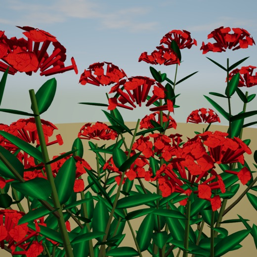
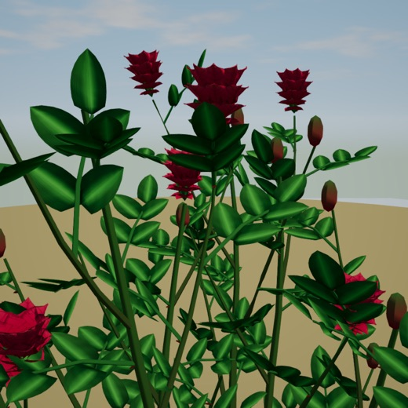
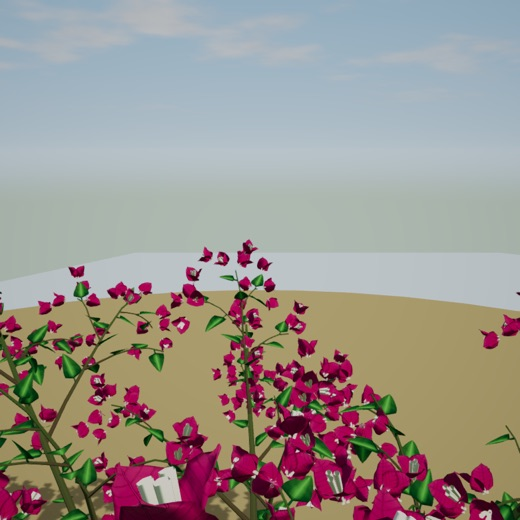
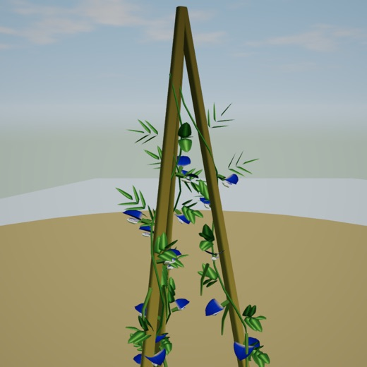
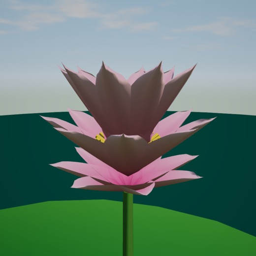
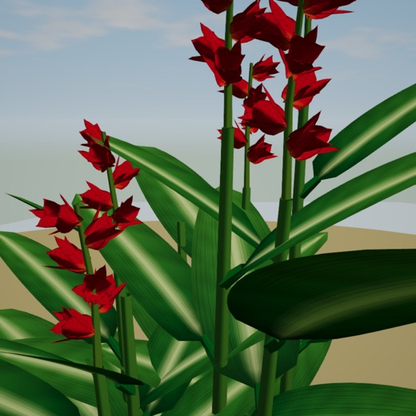
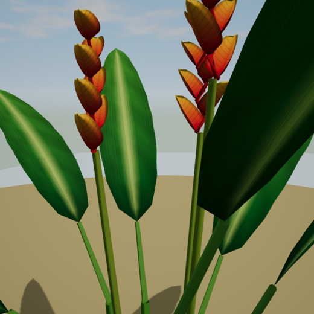
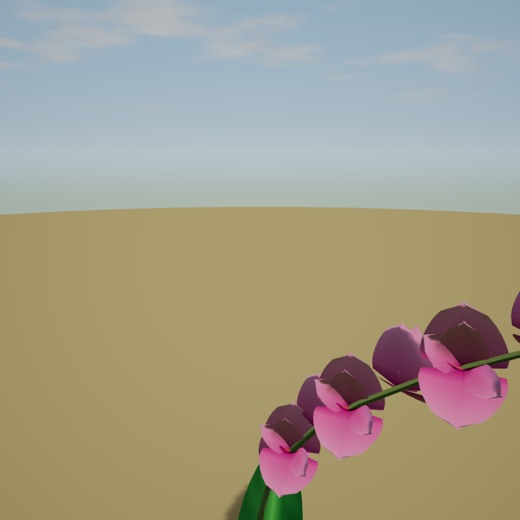
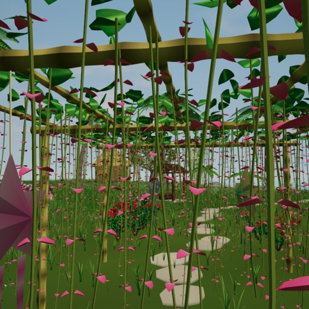
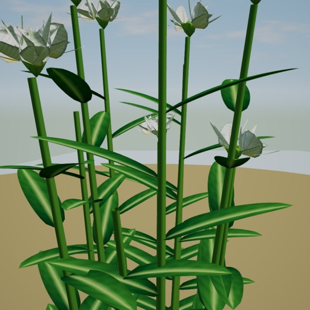
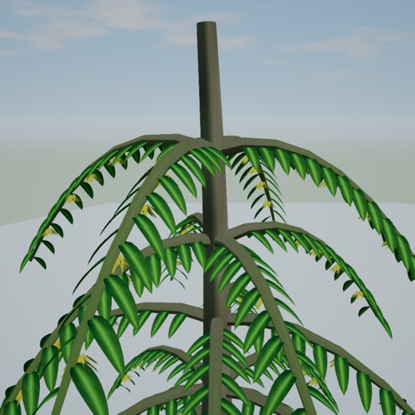
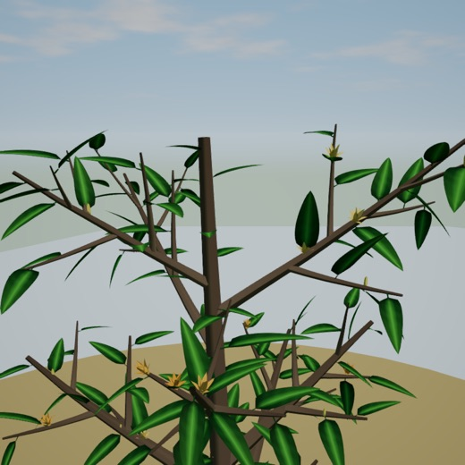

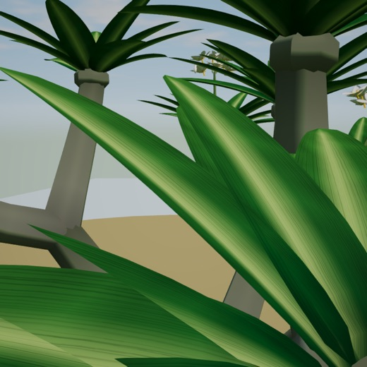
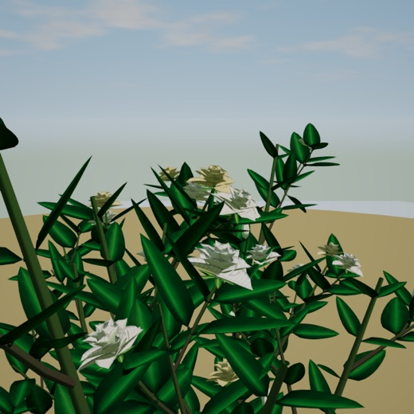
About 45 to 60 minutes. Free walk and the 190 s tour stay as they are.
Her poems become the heart of the game: the reward on every page she wrote about, read aloud by Lola, shown in Cebuano with an English line under it, and collected in the printable herbarium at the end.
If her work has a poem for a flower that is not in our 18, we add that flower (new plants never reshuffle the garden).
We do not write new poems and put them in her voice or her name. A made up "Alburo poem" would be the one thing a panel or Ma'am Alburo could fairly object to.
Pages with no poem of hers end with Lola's spoken knowledge and the folk use instead. They still feel complete.
The poem text (or a photo of the pages), which flowers it covers, and the exact wording of her permission, so we can credit it right in the game and in the thesis.
| Design choice | Why |
|---|---|
| The player learns by talking with an elder | Children know fewer plants than their grandparents, and asking them to interview elders started real exchange. (Milani et al., 2025) |
| Real Cebuano healing plants and uses | Cebu and Siquijor healers' knowledge is documented and can be checked. (Miano et al., 2011; Siquijor State College, 2015) |
| Noticing is the core action | People tend to overlook plants; the gap covers attention, attitude, knowledge and interest. (Wandersee & Schussler, 1999; Parsley, 2020) |
| Clue and deduction loop | Puzzle and adventure are the most used genres for intangible heritage games. Botany Manor proves the loop works with plants. (Zúñiga-Solórzano et al., 2025; Balloon Studios, 2024) |
| A story, not a quiz | Heritage games work best on awareness and feeling, which a story carries. (Mortara et al., 2014; Anderson et al., 2010) |
| Pre and post quiz plus SUS and GEQ | Games improve learning when well designed, so we measure it, not assume it. (Clark et al., 2016; Wouters et al., 2013; Hake, 1998; Brooke, 1996; IJsselsteijn et al., 2013) |
| Cebuano first, made locally | Filipino games with Filipino stories, made for Filipinos, are still rare. (Cerda, 2021) |
| Consent, credit, no medical advice | Traditional knowledge belongs to its community; folk medicine has its own law. (RA 8371; RA 8423) |
| Some gaps may be the land, not lost teaching | Use care when claiming loss; we say "often" and test our own players. (Hanazaki et al., 2013) |
Anderson, E. F., McLoughlin, L., Liarokapis, F., Peters, C., Petridis, P., & de Freitas, S. (2010). Developing serious games for cultural heritage: A state-of-the-art review. Virtual Reality, 14(4), 255–275. https://doi.org/10.1007/s10055-010-0177-3
Balloon Studios. (2024). Botany Manor [Video game]. Whitethorn Games.
Brooke, J. (1996). SUS: A “quick and dirty” usability scale. In P. W. Jordan et al. (Eds.), Usability evaluation in industry (pp. 189–194). Taylor & Francis.
Cerda, C. (2021). Towards a “Filipino” video game: Teaching Filipino culture and identity for video game development. Transactions of the Digital Games Research Association, 5(3). https://doi.org/10.26503/todigra.v5i3.122
Clark, D. B., Tanner-Smith, E. E., & Killingsworth, S. S. (2016). Digital games, design, and learning: A systematic review and meta-analysis. Review of Educational Research, 86(1), 79–122. https://doi.org/10.3102/0034654315582065
Hake, R. R. (1998). Interactive-engagement versus traditional methods. American Journal of Physics, 66(1), 64–74. https://doi.org/10.1119/1.18809
Hanazaki, N., Herbst, D. F., Marques, M. S., & Vandebroek, I. (2013). Evidence of the shifting baseline syndrome in ethnobotanical research. Journal of Ethnobiology and Ethnomedicine, 9, 75. https://doi.org/10.1186/1746-4269-9-75
IJsselsteijn, W. A., de Kort, Y. A. W., & Poels, K. (2013). The Game Experience Questionnaire. Technische Universiteit Eindhoven.
Miano, R. S., Picardal, J. P., Alonso, C. A. G., & Reuyan, D. (2011). Ethnobotanical inventory and assessment of medically-important plant roots in Cebu Island, Philippines. Asian Journal of Biodiversity, 2(1).
Milani, F., Bottoni, M., Maiellaro, A., Crisci, A., Bruschi, P., Giuliani, C., & Fico, G. (2025). Counteracting traditional knowledge erosion: An ethnobotanical survey in Valle Imagna (Bergamo, Italy) to foster intergenerational transfer. Plants, 14(22), 3477. https://doi.org/10.3390/plants14223477
Mortara, M., Catalano, C. E., Bellotti, F., Fiucci, G., Houry-Panchetti, M., & Petridis, P. (2014). Learning cultural heritage by serious games. Journal of Cultural Heritage, 15(3), 318–325. https://doi.org/10.1016/j.culher.2013.04.004
Parsley, K. M. (2020). Plant awareness disparity: A case for renaming plant blindness. Plants, People, Planet, 2(6), 598–601. https://doi.org/10.1002/ppp3.10153
Republic Act No. 8371. (1997). The Indigenous Peoples' Rights Act of 1997.
Republic Act No. 8423. (1997). Traditional and Alternative Medicine Act of 1997.
Siquijor State College. (2015). Folk healing practices of Siquijor Island [Terminal report]. Philippine Traditional Knowledge Digital Library on Health. https://tkdlph.com
Wandersee, J. H., & Schussler, E. E. (1999). Preventing plant blindness. The American Biology Teacher, 61(2), 82–86. https://doi.org/10.2307/4450624
Wouters, P., van Nimwegen, C., van Oostendorp, H., & van der Spek, E. D. (2013). A meta-analysis of the cognitive and motivational effects of serious games. Journal of Educational Psychology, 105(2), 249–265. https://doi.org/10.1037/a0031311
Zúñiga-Solórzano, M. E., Fabregat, R., & Jové, T. (2025). Characterization of games technologies for learning in the context of intangible cultural heritage. In Digital Heritage 2025. Eurographics Association. https://doi.org/10.2312/dh.20253377